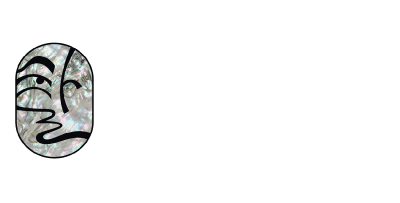
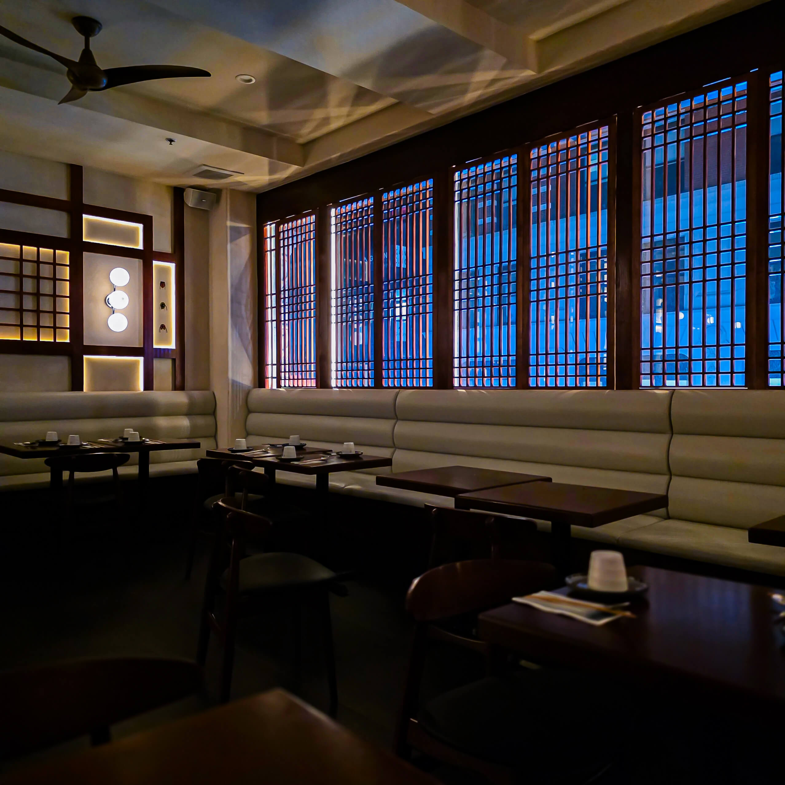
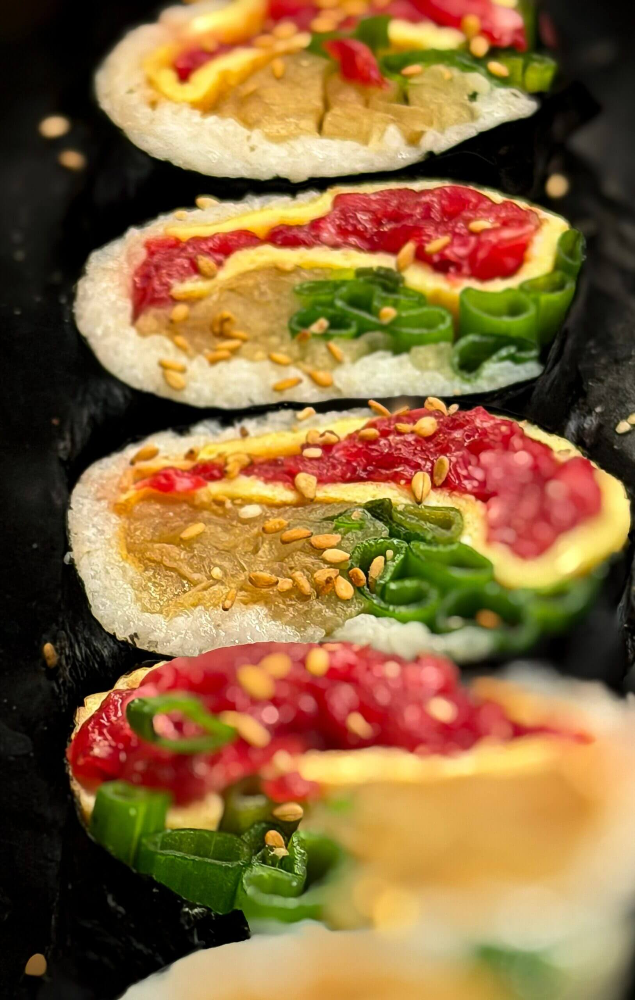
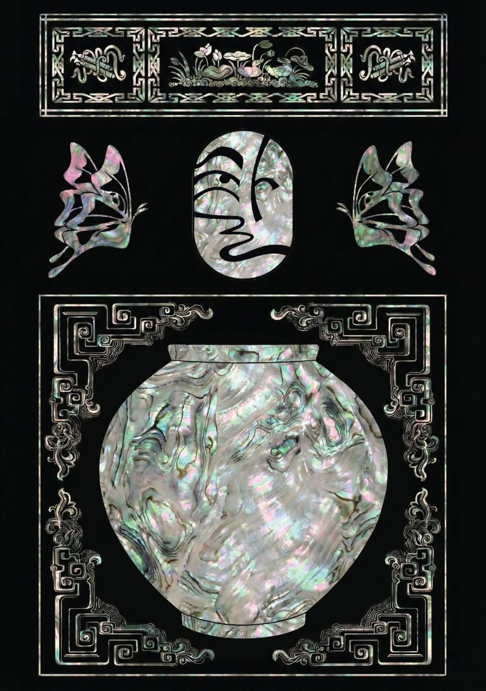

Dining
Contemporary Korean dishes, refined plating, and a relaxed bistro-bar setting in Koreatown.

TAL Bistro & BarContemporary Korean bistro and bar
Refined Korean hospitality where tradition, modern dining, cocktails, and a warm bistro atmosphere meet.
Backup site
This emergency version keeps the customer-facing essentials online-ready while preserving the original WordPress capture in this repository for design and recovery reference.
Contemporary Korean dishes, refined plating, and a relaxed bistro-bar setting in Koreatown.
Artisanal drinks and a warm atmosphere designed for dates, dinners, groups, and after-work plans.
The fallback keeps reservation and inquiry contact paths visible while the original WordPress site remains the source snapshot.

Venue details
The backup site follows the original TAL story: tradition, modernity, service, menu, and reservation inquiry in one dependable static page.
Original assets


32 W 32nd St, Floor 3, New York, NY 10001 | hello@talnyc.com